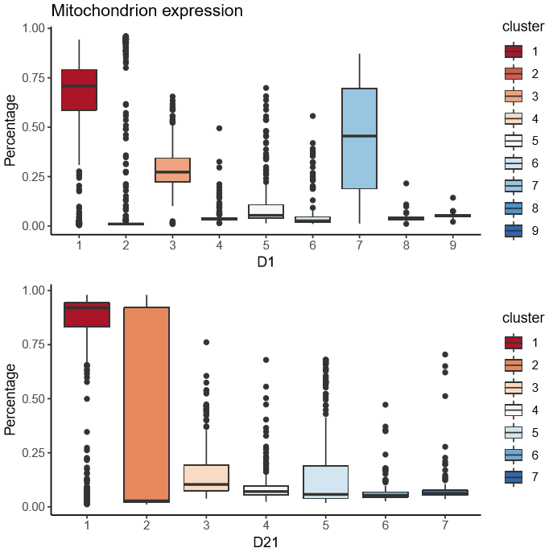

CMC data report
Quality control
CMC D1 Summary
CMC D21 Summary
Clustering analysis
CMC D1 Clustering
CMC D21 Clustering
Mitochondrion gene expression percentage in each cluster

Clustering analysis v2
I regress out the variation in data contributed by mitochondrion expression percentage, and perform clustering again.
CMC D1 Clustering v2
CMC D21 Clustering v2